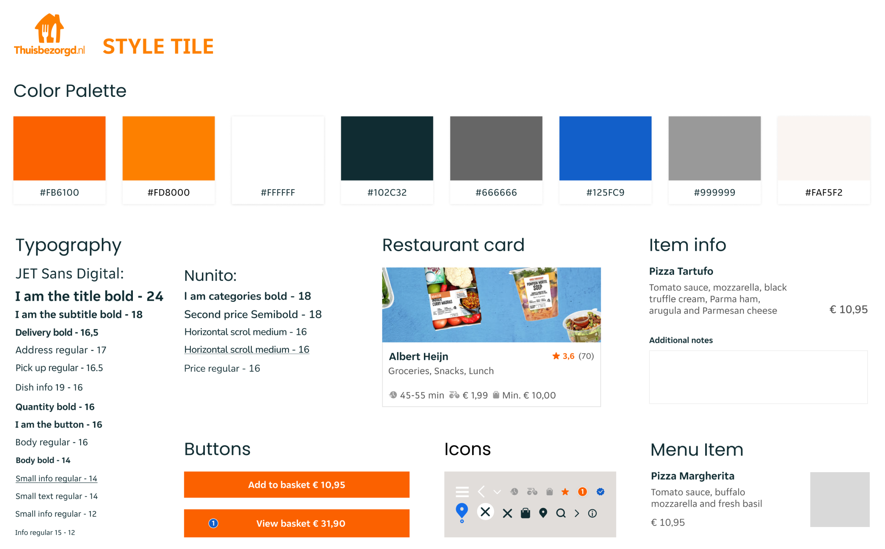

This is the 3rd project that I did for Ironhack UX/UI bootcamp and the challenge was to redesign an app. I chose the food delivery app Thuisbezorgd.nl.
This was a redesign challenge, so I used Heuristics Analysis and the Design Thinking process to get to the final solution.
Thuisbezorgd.nl is a Dutch multinational online food ordering and delivery company founded in 2000, it is part of Takeaway.com, one of the world's largest food ordering sites.
I started the project by doing the Heuristics Analysis, reviewing the app interface, and doing some comments about what I was seeing. The analysis results in a list of potential usability issues with scores from high to low.
This usability review showed a poor score on some of the app's screens like search screen, restaurant page and also some issues with the ordering path that the user needs to follow for ordering food.
To continue my project, I looked into the App Store and Google Play to search for what the user is saying about the app Thuisbezorgd.nl and I found some very interesting comments that served to complement my research along with the interviews I did. Below you can see some of the comments that I use in my research.
For the interviews, what I captured was that the user is bothered by the fact that some of the restaurants don't show pictures of the dishes, and the information about the food is not well structured. This is something that is not very well concise inside the app.
Also in the interviews, the users said that “the process of ordering could be easier, the pictures could be bigger or at least clickable to see in a bigger size.”.
So, I gathered all the information I could and with that, Diana Alves came to life as my User Persona.
She is a Brazilian expat living in the Netherlands. Diana likes to try food from everywhere through delivery, but dishes are in Dutch, and she can't understand much; she is a visual person, she needs to see pictures of the dishes and she thinks the order flow is confusing.
And to help Diana, I created my Value Proposition: A concise structure to the restaurant's page, with a standard hierarchy of information and photos so that the user better understands what they are choosing to eat and also gives the user a good quality of path inside the app.
To start the UI part of this project, I gave some attributes to the brand in order to make the moodboard.
Friendly, Care and Deliver are the brand attributes. I used these words to express what the brand wants to convey to users, and how they want to approach the user, using this also to create the moodboard.
Since my main objective was not to give the app a major change, I kept the Thuisbezorgd app's original colors and some of its typography.
To show the essence of the brand and make it more concise and better structured, I created this Style Tile that becomes my guide for the next step of this project, which is the creation of the app's Hi-Fi prototype.

Here below are some screens of the actual Thuisbezorgd app and some of the screens with the changes I did.
To show the essence of the brand and make it more concise and better structured, I created this Style Tile that becomes my guide for the next step of this project, which is the creation of the app's Hi-Fi prototype.